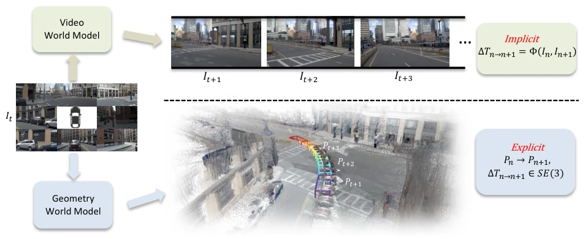
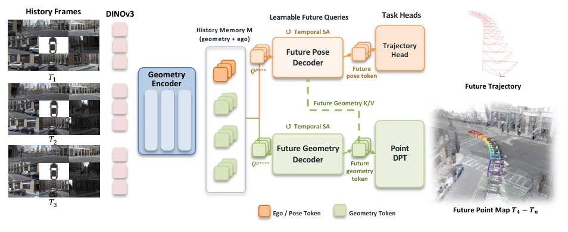
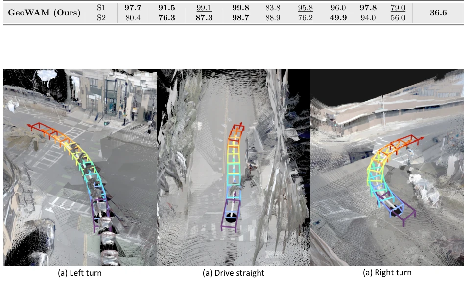

This paper serves as a bucket of cold water for teams obsessed with generating realistic videos within the "world model" track. While everyone is busy teaching models to "paint" future pixels, GeoWAM bluntly asserts: pixels are too dirty, geometry is clean. It forcibly shifts the core of world models from video generation to point cloud prediction. Although this approach is not entirely novel, the execution is quite thorough. Through inverse dynamics design, it infers ego-vehicle motion from geometric evolution, rather than directly predicting actions. However, while this geometry-based pre-training shows significant effects on simulation data, whether the robustness of point cloud prediction can withstand sensor noise and dynamic occlusions on real vehicles remains a question mark. After all, bridging the gap between "good-looking" and "usable" involves the distance of physical engines and relies on high-quality geometric annotations.
研究动机Motivation
自动驾驶本质是空间博弈，但现有 WAM 大多基于视频生成，如 Epona [43] 和 DriveDreamer [33]。这些模型在像素空间学习场景演化，却将几何、运动、纹理和光照纠缠在一起。模型可能学会了视觉规律，却未必理解物理规律，导致生成的未来画面虽逼真，但隐含的 3D 变换难以恢复，无法直接指导规划。视频世界模型优化的是视觉观测分布，而非物理动态。自动驾驶需要的是在三维坐标系中明确的空间结构，而非二维的视觉幻觉。因此，直接预测几何特征能更自然地对齐驾驶动作的执行空间，为安全规划提供显式监督，避免模型在像素层面“幻觉”出安全路径。
Autonomous driving is essentially spatial gaming, yet existing WAMs are predominantly based on video generation, such as Epona [43] and DriveDreamer [33]. These models learn scene evolution in pixel space, yet entangle geometry, motion, texture, and lighting together. Models may learn visual patterns, but may not necessarily understand physical laws, resulting in generated future scenes that are realistic, yet the implicit 3D transformations are difficult to recover and cannot directly guide planning. Video world models optimize visual observation distributions, not physical dynamics. Autonomous driving requires explicit spatial structures in 3D coordinate systems, not 2D visual illusions. Therefore, directly predicting geometric features can more naturally align with the execution space of driving actions, providing explicit supervision for safe planning and avoiding models "hallucinating" safe paths at the pixel level.

Figure 1 Video and geometry world models represent scene dynamics differently. Given the same current observation, a video world model predicts how pixel values evolve over time. The underlying 3D transformations remain implicit in these pixel changes and are therefore difficult to recover. In contrast, a geometry world model predicts future 3D structure, whose evolution explicitly exposes the underlying spatial transformations and provides a representation naturally aligned with motion planning.
GeoWAM adopts a two-stage training approach. Stage 1 pre-trains the visual geometric world model: utilizing DVGT-2 [49] as an encoder to encode multi-view historical images into memory of geometry and ego-vehicle tokens. The future geometry decoder predicts future geometry tokens via temporal self-attention and cross-attention, and decodes them into dense point clouds. The loss function includes feature alignment, point cloud regression, and normal consistency. Stage 2 fine-tunes the action head: introducing an inverse dynamics design, utilizing predicted future geometry tokens to condition the future ego-vehicle token decoder, and cutting the gradient backpropagation of trajectory loss to geometric features via stop-gradient to protect pre-training capabilities. The final trajectory head directly regresses the ego-vehicle trajectory, requiring no anchors or mode classification. This design unifies world modeling and action prediction within the geometric space, ensuring planning is based on explicit spatial dynamics rather than implicit visual features.

Figure 2 Overview of GeoWAM. Our framework takes a sequence of historical multiview frames as input. A geometry encoder converts these observations into a multi-level memory of geometry and ego/pose tokens. The future geometry decoder applies temporal self-attention and cross-attends to the historical memory to predict future geometry tokens, which are decoded by Point DPT into dense future point maps. In the action branch, the predicted geometry tokens condition the future ego/pose decoder through a stop-gradient connection, and the resulting ego/pose tokens are mapped by the trajectory head to the future ego trajectory.
Experiments cover geometry prediction and planning. On the nuScenes [2] validation set, GeoWAM's geometry prediction error outperforms video baselines (e.g., Epona+DVGT [43]) and geometry baselines (VGGT-World [28]), with Abs Rel dropping to 0.257. In the NAVSIM [7] planning task, GeoWAM achieves an EPDMS of 90.2 on navtest, surpassing DVGT-2 [49]'s 89.6. In the more challenging navhard closed-loop test, GeoWAM leads with an EPDMS of 36.6, proving its geometric representation can effectively support long-horizon planning. Visualizations show the model maintains scene structure coherence and accurately predicts surrounding vehicle dynamics, verifying the effectiveness of the geometric world model in embodied decision-making, and demonstrating it can directly guide actions without future image synthesis.

Figure 3 Qualitative visualization of future geometry prediction for left-turn, straight-driving, and right-turn cases. Predictions from all future time steps are aggregated in each scene, and the bounding boxes denote the predicted ego poses at successive time steps. GeoWAM preserves environmental structures and road markings across different driving maneuvers.